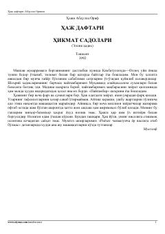

HDAbdulla Oripovning Haj ziyorati taassurotlari aks etgan she'riy to'plami.
Ushbu asar taniqli o'zbek shoiri Abdulla Oripovning Haj ziyorati taassurotlari asosida yozilgan she'riy to'plamidir. Kitobda muallifning Ka'batulloh va Madina shahridagi ruhiy kechinmalari, islomiy qadriyatlar hamda insoniylik haqidagi hikmatli fikrlari she'riy shaklda ifodalangan.